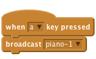
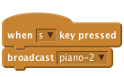
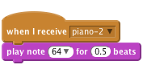
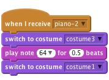

Scratch Card - Piano
Level 5
Draw a piano by creating black and white rectangles.

Now create a script which plays a note when the “a” key is pressed.

Create two more notes when you press “s” and “d” on the keyboard.


Copy the costume 3 times. Fill in a different key on each one.


Make each note switch to a different costume and then switch back to costume1.

![when [up-arrow v] key pressed
set instrument to (pick random (1) to (99))](2214ccd6cdb5c2be3d862a7302217e3275b478e1.png)